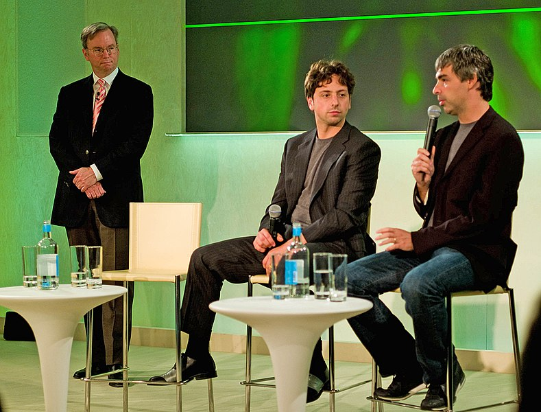

Corporate Affairs (continued)
Finance
 Google's initial public offering (IPO) took place on August 19, 2004. At IPO, the company offered 19,605,052 shares at a price of $85 per share.[1] The sale of $1.67 billion gave Google a market capitalization of more than $23 billion. The stock performed well after the IPO, with shares hitting $350 for the first time on October 31, 2007, primarily because of strong sales and earnings in the online advertising market. The surge in stock price was fueled mainly by individual investors, as opposed to large institutional investors and mutual funds. GOOG shares split into GOOG class C shares and GOOGL class A shares. The company is listed on the NASDAQ stock exchange under the ticker symbols GOOGL and GOOG, and on the Frankfurt Stock Exchange under the ticker symbol GGQ1. These ticker symbols now refer to Alphabet Inc., Google's holding company, since the fourth quarter of 2015.
The corporation's consolidated revenue for the third quarter of 2013 was reported in mid-October 2013 as $14.89 billion, a 12 percent increase compared to the previous quarter. Google's Internet business was responsible for $10.8 billion of this total, with an increase in the number of users' clicks on advertisements. By January 2014, Google's market capitalization had grown to $397 billion.[2]
Google uses various tax avoidance strategies. Out of the five largest American technology companies, it pays the lowest taxes to the countries of origin of its revenues. Google between 2007 and 2010 saved $3.1 billion in taxes by shuttling non-U.S. profits through Ireland and the Netherlands and then to Bermuda. Such techniques lower its non-U.S. tax rate to 2.3 per cent, while normally the corporate tax rate in for instance the UK is 28 per cent.[3] This has reportedly sparked a French investigation into Google's transfer pricing practices.
Google Vice-President Matt Brittin testified to the Public Accounts Committee of the UK House of Commons that his UK sales team made no sales and hence owed no sales taxes to the UK. In January 2016, Google reached a settlement with the UK to pay £130m in back taxes plus higher taxes in future. In 2017, Google channeled $22.7 billion from the Netherlands to Bermuda to reduce its tax bill.
In 2013, Google ranked 5th in lobbying spending, up from 213th in 2003. In 2012, the company ranked 2nd in campaign donations of technology and Internet sections.
Environment
1998 - 2010
In October 2006, the company announced plans to install thousands of solar panels to provide up to 1.6 megawatts of electricity, enough to satisfy approximately 30% of the campus' energy needs.[243] The system will be the largest solar power system constructed on a U.S. corporate campus and one of the largest on any corporate site in the world.[243] Since 2007, Google has aimed for carbon neutrality in regard to its operations.[4]
2010 - 2015
In 2010, Google Energy made its first investment in a renewable energy project, putting $38.8 million into two wind farms in North Dakota. The company announced the two locations will generate 169.5 megawatts of power, enough to supply 55,000 homes. In February 2010, the Federal Energy Regulatory Commission FERC granted Google an authorization to buy and sell energy at market rates. The corporation exercised this authorization in September 2013 when it announced it would purchase all the electricity produced by the not-yet-built 240-megawatt Happy Hereford wind farm.
In July 2010, Google signed an agreement with an Iowa wind farm to buy 114 megawatts of energy for 20 years.[5]
Google disclosed in September 2011 that it "continuously uses enough electricity to power 200,000 homes", almost 260 million watts or about a quarter of the output of a nuclear power plant. Total carbon emissions for 2010 were just under 1.5 million metric tons, mostly due to fossil fuels that provide electricity for the data centers. Google said that 25 percent of its energy was supplied by renewable fuels in 2010. An average search uses only 0.3 watt-hours of electricity, so all global searches are only 12.5 million watts or 5% of the total electricity consumption by Google.
2015 onwards
In December 2016, Google announced that—starting in 2017—it will power all of its data centers, as well as all of its offices, from 100% renewable energy. The commitment will make Google "the world's largest corporate buyer of renewable power, with commitments reaching 2.6 gigawatts (2,600 megawatts) of wind and solar energy". Google also stated that it does not count that as its final goal; it says that "since the wind doesn't blow 24 hours a day, we'll also broaden our purchases to a variety of energy sources that can enable renewable power, every hour of every day". Additionally, the project will "help support communities" around the world, as the purchase commitments will "result in infrastructure investments of more than $3.5 billion globally", and will "generate tens of millions of dollars per year in revenue to local property owners, and tens of millions more to local and national governments in tax revenue".[6]
In November 2017, Google bought 536 megawatts of wind power. The purchase made the firm reach 100% renewable energy. The wind energy comes from two power plants in South Dakota, one in Iowa and one in Oklahoma.
In September 2019, Google's chief executive announced plans for a $2 billion wind and solar investment, the biggest renewable energy deal in corporate history. This will grow their green energy profile by 40%, giving them an extra 1.6 gigawatt of clean energy, the company said.
Philanthropy
In 2004, Google formed the not-for-profit philanthropic Google.org, with a start-up fund of $1 billion. The mission of the organization is to create awareness about climate change, global public health, and global poverty. One of its first projects was to develop a viable plug-in hybrid electric vehicle that can attain 100 miles per gallon. Google hired Larry Brilliant as the program's executive director in 2004[7] and Megan Smith has since replaced him as director.
In 2008, Google announced its "project 10100" which accepted ideas for how to help the community and then allowed Google users to vote on their favorites.[8] After two years of silence, during which many wondered what had happened to the program, Google revealed the winners of the project, giving a total of ten million dollars to various ideas ranging from non-profit organizations that promote education to a website that intends to make all legal documents public and online.
In March 2007, in partnership with the Mathematical Sciences Research Institute (MSRI), Google hosted the first Julia Robinson Mathematics Festival at its headquarters in Mountain View. In 2011, Google donated 1 million euros to International Mathematical Olympiad to support the next five annual International Mathematical Olympiads (2011–2015).[9] In July 2012, Google launched a "Legalize Love" campaign in support of gay rights.